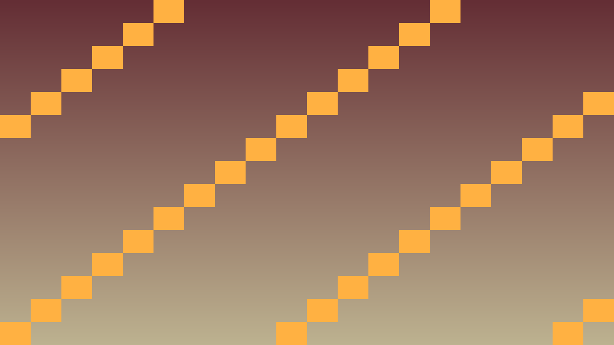
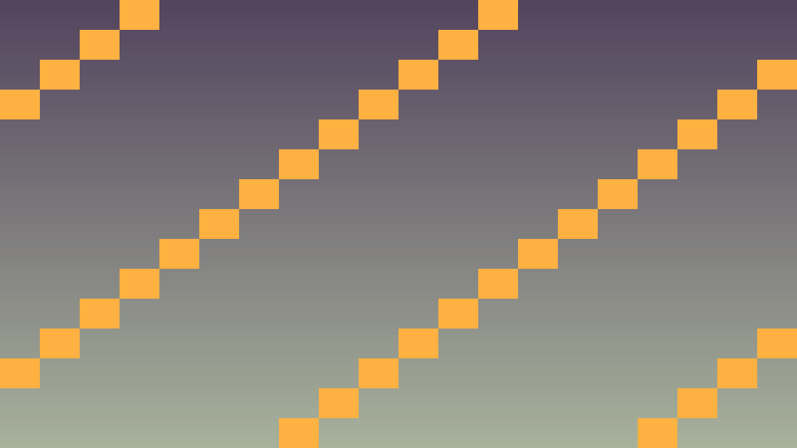
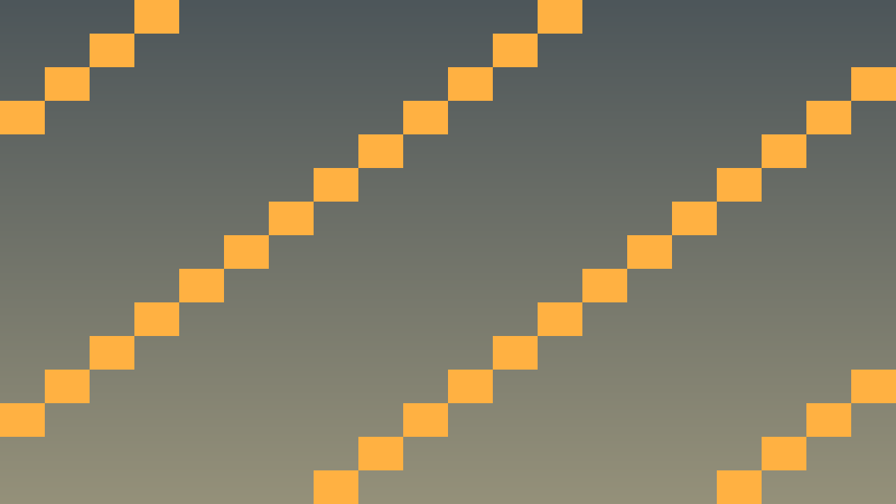

6.5 Export (eksports) un publishing (publicēšana)
Stundas uzdevums: Eksportēt Godot C# spēli desktop platform (darbvirsmas platformai) un publicēt lejupielādējamu version (versiju) internet (internetā).
80 min plāns: Teorija un paraugs (~10 min) · 1. uzdevums (~20 min) - eksportē spēli uz computer (datoru) · 2. uzdevums (~25 min) - pārbaudi build (būvējums) ārpus editor (redaktora) · 3. uzdevums (~20 min) - publicē lejupielādējamu version (versiju) internet (internetā) · Iesniegšana (~5 min).
Pirms sāc: atver savu spēli. Šodien no project (projekta) taisīsi file (failu), ko var iedot citam cilvēkam. Pirms sāc, lejupielādē export templates (eksporta veidnes): Editor (redaktors) -> Manage Export Templates (pārvaldīt eksporta veidnes).
Teorija: Export presets (eksporta iestatījumu kopa)
Godot atbalsta export (eksportu) uz vairākām platformām. C# project (projektam) Godot 4 izvēlies desktop (darbvirsma) export (eksportu): Windows, Linux vai macOS. Web export (eksportu) Godot 4 C# project (projektiem) šobrīd nelieto; ja mērķis ir browser (pārlūks), project (projektu) plāno bez C# vai ar citu Godot version (versiju).
# Desktop eksporta soļi C# projektam
# 1. Project → Export → Add → Windows Desktop / Linux / macOS
# 2. Lejupielādē export templates: Editor → Manage Export Templates
# 3. Pārliecinies, ka C# projekts būvējas
dotnet build
# 4. Export Project → build/MyGame.exe vai build/MyGame.x86_64
# 5. Aizver Godot un palaid eksportēto failu no build/ mapesPublishing (publicēšana): ieliec eksportēto spēli ZIP (saspiests arhīvs) archive (arhīvā) un publicē to kā lejupielādējamu project (projektu), piemēram itch.io lapā.
Kā šo izmantot project (projektā)
Atceries: ar redzamu efektu editor (redaktorā) nepietiek. Paskaidro, kura C# class (klase) glabā state (stāvokli), kura method (metode) to maina un kā Godot node (mezgls) structure (struktūra) izmanto šo code (kodu).
Pārbaudi: UI (lietotāja saskarne) signal (signāli), audio (skaņa) darbības, debug (atkļūdošana) output (izvade) un publishing (publicēšanas) template (sagatave) ir sasaistīta ar C# game state (spēles stāvokli).
public class PolishCheckpoint
{
public string Lesson = "6.5 Eksports un publicēšana";
public bool UsesCSharp = true;
public bool ConnectsUiSignals = true;
public bool RoutesAudioEvents = true;
public bool VerifiesExportBuild = true;
}Praktiskie uzdevumi
1. uzdevums -
Eksportē spēli uz computer (datoru)
Beigās tev būs file (fails), ko var palaist bez Godot.
- Atver Project (projekts) -> Export (eksportēt).
- Nospied Add (pievienot) un izvēlies savu platformu (Windows, Linux vai macOS).
- Pārbaudi, vai zem window (loga) nav sarkana brīdinājuma par trūkstošiem templates.
- Nospied Export Project (eksportēt projektu) un saglabā folder (mapē)
build/. - Aizver Godot pilnībā.
- Palaid eksportēto file (failu) un izspēlē vienu līmeni.
- Pievieno
.gitignorefile (failam) rindubuild/.
Gatavs, kad: eksportētā spēle palaižas bez Godot editor (redaktora), un folder (mape) build/ nenonāk GitHub.
2. uzdevums -
Pārbaudi build (būvējums) ārpus editor (redaktora)
Beigās tu zināsi, ka spēle darbojas arī bez Godot editor (redaktora).
- Aizver Godot pilnībā, lai nepārbaudītu spēli editor (redaktorā).
- Palaid eksportēto file (failu) no
build/folder (mapes). - Izspēlē vismaz vienu līmeni un pārbaudi UI (lietotāja saskarne), audio (skaņa) un save (saglabāšanu).
- Pārbaudi, ka blakus eksportam atrodas nepieciešamie data (dati), piemēram
.pckvai platformai vajadzīgās library (bibliotēkas). - Saspied visu build (būvējums) folder (mapes) saturu ZIP (saspiests arhīvs) archive (arhīvā).
- Izpako ZIP (saspiests arhīvs) citā folder (mapē) un palaid spēli vēlreiz.
- Pieraksti, kāpēc jāpārbauda tieši izpakots archive (arhīvs), ne tikai Godot project (projekts).
Gatavs, kad: izpakotais archive (arhīvs) palaiž spēli ārpus Godot editor (redaktora), un spēles pamatfunkcijas joprojām darbojas.
3. uzdevums -
Publicē lejupielādējamu spēli internet (internetā)
Beigās cits cilvēks varēs lejupielādēt un palaist tavu spēli.
- Izveido account (kontu) website (vietnē)
itch.io. - Nospied Upload (augšupielāde) new project (jauns projekts) un izvēlies Downloadable type (tipu).
- Augšupielādē ZIP (saspiests arhīvs) archive (arhīvu) ar eksportēto desktop (darbvirsma) build (būvējums).
- Norādi, kurai platformai tas paredzēts: Windows, Linux vai macOS.
- Pievieno īsu aprakstu, vadību un divus screenshot (ekrānuzņēmumus).
- Saglabā un atver publisko link (saiti) citā computer (datorā) vai browser (pārlūkā).
- Pieraksti, vai download (lejupielāde) un palaišana strādāja tāpat kā tavā computer (datorā).
Gatavs, kad: spēli var lejupielādēt no publiskās link (saites), izpakot un palaist bez Godot editor (redaktora).
Papildu uzdevums - Uzraksti spēles aprakstu
Ja pamatdarbs ir gatavs, noformē spēles lapu.
- Uzraksti divus teikumus par to, kas spēlē jādara.
- Pievieno vadības aprakstu: kuri key (taustiņi) ko dara.
- Augšupielādē divus screenshot (ekrānuzņēmumus).
- Pievieno savu vārdu kā autoru un norādi uz izmantotajiem resource (resursiem).
- Palūdz klasesbiedram izspēlēt spēli, neko nepaskaidrojot.
Gatavs, kad: klasesbiedrs saprata, kā spēlēt, tikai izlasot tavu lapu.
Ko sagatavo
Stundas mērķis: Tava Godot C# spēle ir eksportēta kā desktop (darbvirsma) program (programma), pārbaudīta ārpus editor (redaktora) un publicēta internet (internetā) kā lejupielādējams ZIP (saspiests arhīvs) archive (arhīvs).
GitHub repository (krātuvē) jābūt:
- README.md ievietota publiskā link (saite) uz tavu spēli itch.io website (vietnē).
- Screenshot (ekrānuzņēmums) ar eksportēto spēli, kas darbojas ārpus Godot editor (redaktora).
- Screenshot (ekrānuzņēmums) ar Godot export (eksporta) window (logu), kurā redzams desktop (darbvirsma) profils.
- README.md: kāpēc Godot 4 C# project (projektam) šajā kursā publicējam lejupielādējamu desktop (darbvirsma) build (būvējums), nevis Web build (būvējums).
Kā iesniedz: Veic commit (izmaiņu fiksējums) un push (nosūtīšana uz attālo krātuvi). Skolotāja norādītajā vietā ievieto tikai GitHub repository (krātuves) link (saiti); visiem prasītajiem file (failiem), README.md pierakstiem un pierādījumiem jābūt pašā repository (krātuvē).
Biežākās kļūdas
- C# assembly nav build (būvējums): Pirms export (eksportēšanas) nospied Godot Build (būvēt projektu) vai palaid
dotnet build. - EXE not running: Pārliecinies, ka ZIP (saspiests arhīvs) archive (arhīvā) ir visi eksportētie file (faili), ne tikai
.exe. - Large export (eksportēt) size (izmērs): Optimize textures (tekstūra) (PNG (bezzudumu attēlu formāts) → WebP (tīmekļa attēlu formāts)), audio (skaņa) (compress).
Godot screenshot (ekrānuzņēmumi)



Code sample (koda piemērs) (paplašināts)
using Godot;
public struct ExportChecklist
{
public bool HasExportTemplate;
public bool HasDotnetBuild;
public bool HasDesktopExecutable;
public bool TestedOutsideEditor;
public bool WebLimitationDocumented;
public bool IsReadyToPublish()
{
return HasExportTemplate
&& HasDotnetBuild
&& HasDesktopExecutable
&& TestedOutsideEditor
&& WebLimitationDocumented;
}
}
public partial class ExportReporter : Node
{
public void PrintStatus(ExportChecklist checklist)
{
GD.Print("Platform: ", OS.GetName());
GD.Print("Ready to publish: ", checklist.IsReadyToPublish());
}
}